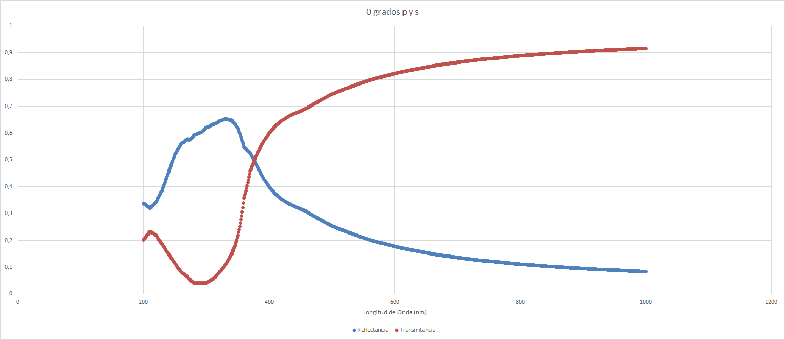
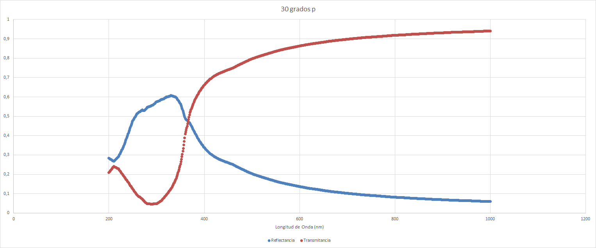
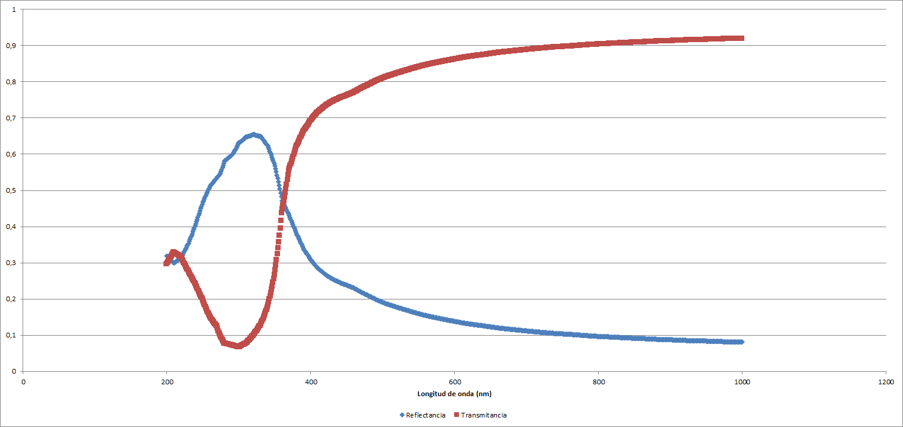
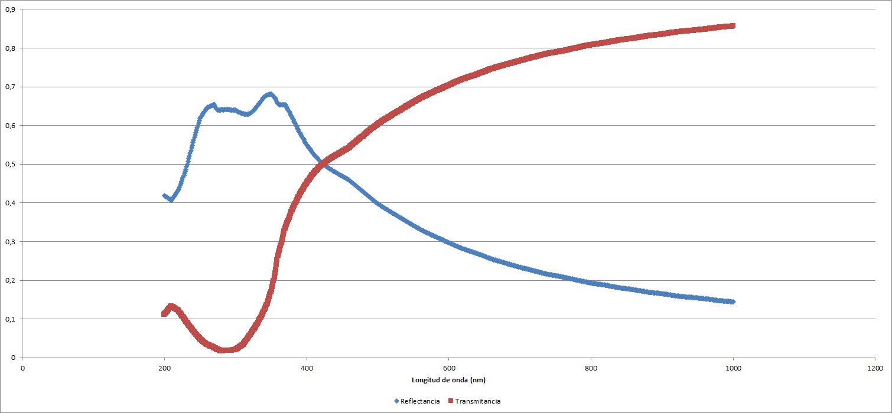
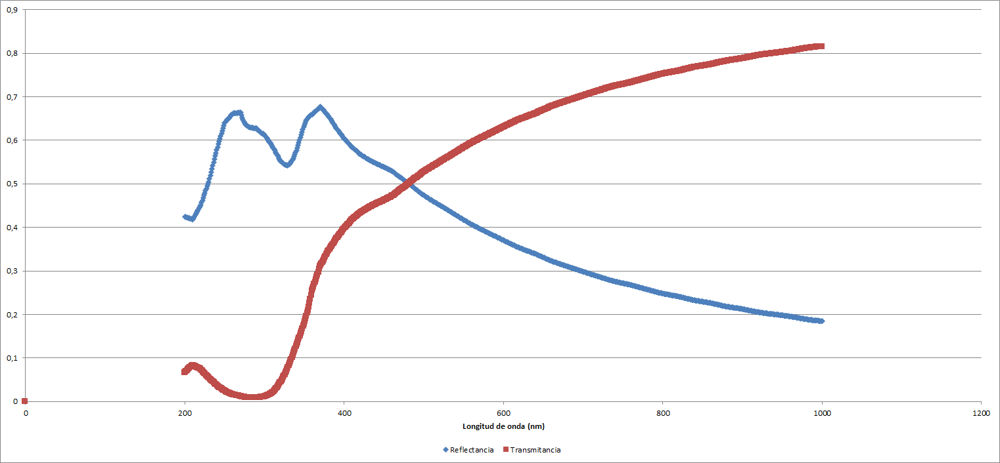
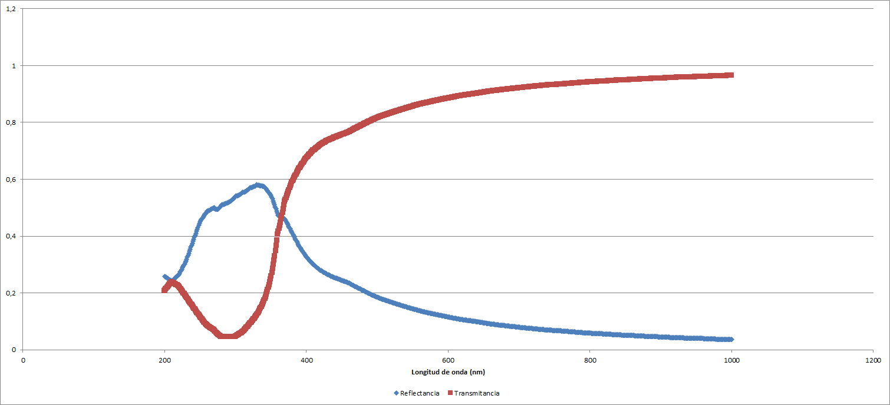
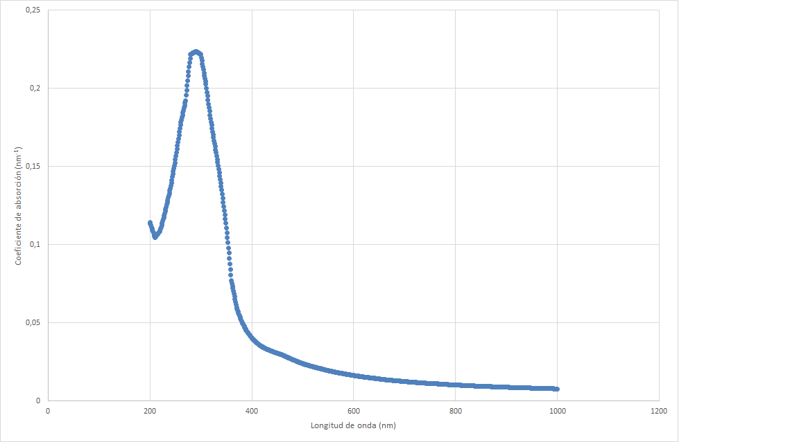

Propiedades ópticas de los materiales.
Buscar información general sobre los thin films y exponer brevemente las posibles aplicaciones derivadas de sus propiedades ópticas.
Los thin films son láminas de material con un grosor que varía entre décimas de nanómetro ($1 \: \mathrm{nm} \equiv 10^{-9} \: \mathrm{m}$) y varias micras ($1 \: \mathrm{\mu m} \equiv 10^{-6} \: \mathrm{m}$) ("Thin Film", 2024).
Las aplicaciones de los thin films pueden ser los recubrimientos de diferentes objetos, así como semiconductores y memorias de ordenador. En lo que a los recubrimientos se refiere, los thin films de tipo cerámico se utilizan, entre otras cuestiones, para mejorar la vida útil de los utensilios de corte. Además, se suelen utilizar láminas similares en los paneles fotovoltaicos, buscando un ahorro de material y, por consiguiente, de costes. ("Thin Film", 2024).
En lo que respecta a la película que hemos elegido, existen diferentes propiedades a tener en cuenta, que enumeran Evtushenko et al. (2015):
Entre otras.
Para realizar el estudio se ha utilizado el simulador de filmetrics.com, que nos permite ver las gráficas de transmitancia, reflectancia y absorción de diferentes materiales.
Se enumeran a continuación las propiedades de nuestra lámina:
Comenzamos la recogida de datos con un ángulo de incidencia de $\require{gensymb} 0 \degree$. Obtenemos los siguientes datos de mínimos y máximos:
| Reflectancia | ||
|---|---|---|
| Valor | $\lambda$ | |
| Mínimo | 0,0837594 | 1000 |
| Máximo | 0,6535993 | 330 |
| Mínimo relativo | 0,3207503 | 210 |
| Transmitancia | ||
|---|---|---|
| Valor | $\lambda$ | |
| Mínimo | 0,0407934 | 290 |
| Máximo | 0,9162406 | 1000 |
| Máximo relativo | 0,2329928 | 210 |
Utilizando la aplicación graficadora GNUPlot, podemos ver la disposición de los datos en un gráfico.
Si aumentamos el ángulo de incidencia obtenemos los siguientes datos. Para $30 \degree$:
| Reflectancia | ||
|---|---|---|
| Valor | $\lambda$ | |
| Mínimo | 0,108878 | 1000 |
| Máximo | 0,6940301 | 330 |
| Mínimo relativo | 0,3699463 | 210 |
| Transmitancia | ||
|---|---|---|
| Valor | $\lambda$ | |
| Mínimo | 0,0348991 | 290 |
| Máximo | 0,891122 | 1000 |
| Máximo relativo | 0,2083644 | 210 |
Lo cual visualizamos en un gráfico de la siguiente manera:

Y para $60 \degree$ obtenemos los siguientes resultados:
| Reflectancia | ||
|---|---|---|
| Valor | $\lambda$ | |
| Mínimo | 0,2511999 | 1000 |
| Máximo | 0,8132208 | 330 |
| Mínimo relativo | 0,5555834 | 210 |
| Transmitancia | ||
|---|---|---|
| Valor | $\lambda$ | |
| Mínimo | 0,0197556 | 290 |
| Máximo | 0,7488001 | 1000 |
| Máximo relativo | 0,1341152 | 210 |
Lo cual visualizamos de la siguiente forma:

Todos estos datos se han obtenido mediante una polarización de tipo s. Tenemos también los datos equivalntes para la polarización de tipo p. Considerando que con incidencia nula no varían los datos, para un ángulo de $30 \degree$, tenemos:
| Reflectancia | ||
|---|---|---|
| Valor | $\lambda$ | |
| Mínimo | 0,0595903 | 1000 |
| Máximo | 0,6070445 | 330 |
| Mínimo relativo | 0,2671146 | 210 |
| Transmitancia | ||
|---|---|---|
| Valor | $\lambda$ | |
| Mínimo | 0,0464961 | 290 |
| Máximo | 0,9404097 | 1000 |
| Máximo relativo | 0,2407495 | 210 |
Lo cual se traduce en gráficos de la forma siguiente:
Y para ángulo de $60 \degree$:
| Reflectancia | ||
|---|---|---|
| Valor | $\lambda$ | |
| Mínimo | 0,0124268 | 1000 |
| Máximo | 0,4043707 | 330 |
| Mínimo relativo | 0,1365673 | 210 |
| Transmitancia | ||
|---|---|---|
| Valor | $\lambda$ | |
| Mínimo | 0,0699425 | 290 |
| Máximo | 0,9875732 | 1000 |
| Máximo relativo | 0,2601813 | 210 |
Lo cual se traduce en gráficos de la forma siguiente:

Podemos también cambiar el grosor y el medio de nuestra lámina delgada y ver cómo varían los valores de transmitancia y reflectancia para los diferentes ángulos de incidencia de nuestra luz. Se mantienen aisladas las siguientes variables:
Obtenemos, pues, los siguientes resultados. Para un grosor de $d = 5 \: \mathrm{nm}$:
| Reflectancia | ||
|---|---|---|
| Valor | $\lambda$ | |
| Mínimo | 0,062607 | 1000 |
| Máximo | 0,498868 | 310 |
| Mínimo relativo | 0,1894315 | 210 |
| Transmitancia | ||
|---|---|---|
| Valor | $\lambda$ | |
| Mínimo | 0,1598846 | 300 |
| Máximo | 0,937393 | 1000 |
| Máximo relativo | 0,534477 | 210 |
Lo cual se traduce en gráficos de la forma siguiente:

Por otro lado, para un grosor de $d = 10 \: \mathrm{nm}$:
| Reflectancia | ||
|---|---|---|
| Valor | $\lambda$ | |
| Mínimo | 0,0807243 | 1000 |
| Máximo | 0,6554493 | 320 |
| Mínimo relativo | 0,2986683 | 210 |
| Transmitancia | ||
|---|---|---|
| Valor | $\lambda$ | |
| Mínimo | 0,0664399 | 300 |
| Máximo | 0,9192757 | 1000 |
| Máximo relativo | 0,3288279 | 210 |
Lo cual se traduce en gráficos de la forma siguiente:
Los resultados para un grosor de $15 \: \mathrm{nm}$ se encuentran arriba. Se adjuntan a continuación los resultados con una lámina de grosor $d = 20 \: \mathrm{nm}$:
| Reflectancia | ||
|---|---|---|
| Valor | $\lambda$ | |
| Mínimo | 0,1444968 | 1000 |
| Máximo | 0,6815523 | 350 |
| Mínimo relativo | 0,4065668 | 210 |
| Transmitancia | ||
|---|---|---|
| Valor | $\lambda$ | |
| Mínimo | 0,0170228 | 280 |
| Máximo | 0,8555032 | 1000 |
| Máximo relativo | 0,1322507 | 210 |
Lo cual se traduce en gráficos de la forma siguiente:
Para un grosor de $d = 25 \: \mathrm{nm}$:
| Reflectancia | ||
|---|---|---|
| Valor | $\lambda$ | |
| Mínimo | 0,1847609 | 1000 |
| Máximo | 0,6771508 | 370 |
| Mínimo relativo | 0,4183483 | 210 |
| Transmitancia | ||
|---|---|---|
| Valor | $\lambda$ | |
| Mínimo | 0,0078687 | 280 |
| Máximo | 0,8152391 | 1000 |
| Máximo relativo | 0,0829773 | 210 |
Lo cual se traduce en gráficos de la forma siguiente:
Por otro lado, si cambiamos el medio obtenemos resultados diferentes. Modificando el aire por un medio acrílico para un grosor de $d = 15 \: \mathrm{nm}$, obtenemos los siguientes valores para las magintudes que nos ocupan:
| Reflectancia | ||
|---|---|---|
| Valor | $\lambda$ | |
| Mínimo | 0,0361223 | 1000 |
| Máximo | 0,5803976 | 330 |
| Mínimo relativo | 0,2416528 | 210 |
| Transmitancia | ||
|---|---|---|
| Valor | $\lambda$ | |
| Mínimo | 0,0442037 | 290 |
| Máximo | 0,9638777 | 1000 |
| Máximo relativo | 0,2376071 | 210 |
Lo cual se traduce en gráficos de la forma siguiente:
Asimismo, para un medio de celulosa con una lámina de grosor $15 \: \mathrm{nm}$:
| Reflectancia | ||
|---|---|---|
| Valor | $\lambda$ | |
| Mínimo | 0,0370129 | 1000 |
| Máximo | 0,5830446 | 330 |
| Mínimo relativo | 0,2440172 | 210 |
| Transmitancia | ||
|---|---|---|
| Valor | $\lambda$ | |
| Mínimo | 0,0440362 | 290 |
| Máximo | 0,9629871 | 1000 |
| Máximo relativo | 0,2373014 | 210 |
Lo cual se traduce en gráficos de la forma siguiente:

Calculamos el coeficiente de absorción a partir de la transmitancia como especifica Reyes et al. (2019):
\[ \alpha = \frac{\ln{\frac{1}{T}}}{t} \tag{1} \]
Donde $\alpha$ es el coeficiente de absorción, $T$ es la transmitancia y $t$ el grosor de la lámina. Obtenemos el siguiente gráfico.
Por otro lado, el coeficiente de extinción puede ser graficado análogamente, siguiendo la igualdad que se presenta seguidamente:
\[ \kappa = \frac{\lambda \cdot \alpha}{4\pi} \tag{2} \]

Este coeficiente corresponde a la parte imaginaria del índice de refracción complejo. La parte real es siempre el índice obtenido por la ley de Snell. Para nuestro caso vale $n = 2.609$. Así pues, se define el índice de refracción complejo como:
\[ n^{\ast} = n + i \cdot \kappa \tag{3} \]
Tal y como se ha podido analizar en las tablas y los gráficos que se han adjuntado, vemos varias cuestiones comunes a casi todos los conjuntos de datos que se trabajan:
Cuando modificamos el ángulo de incidencia, aumentándolo vemos que aumenta la capacidad reflectiva de la lámina y disminuye, por ende, la transmitancia del sistema.
Por otro lado, el uso de polarización tipo p demuestra una mejor transmitancia para igual ángulo de incidencia.
En lo que respecta a los grosores, vemos que cuando aumentamos el grosor, la transmitancia disminuye considerablemente.
Entre un medio acrílico y uno de celulosa, los datos son prácticamente idénticos. Sin embargo, al compararlo con nuestra lámina de TiO2 y Rutilo vemos que los dos medios son significativamente mejores transmisores de la luz que incide sobre ellos.
Hemos podido comprobar como el material tiene transmitancias altas conforme aumentamos la longitud de onda, lo cual es útil para el cometido principal de uso del mismo, siendo estimulado habitualmente por luz ultravioleta, de $\lambda$ corta. Conseguimos así que la luz no pase fácilmente la película.
Evtushenko, Yu. M., Romashkin, S. V., Trofimov, N. S., y Chekhlova, T. K. (2015). Optical properties of TiO2 thin films. Physics Procedia, 73, 100-107. https://doi.org/10.1016/j.phpro.2015.09.128
Reyes, M. D. L. Á.; Figueroa, S.; Ramírez, E. y Santis, L. F. (2019). Efecto del número de capas en las propiedades ópticas de películas delgadas de CuO-TiO2. En O. Benavides, Handbooks Ciencias e Ingeniería de Materiales para Aplicaciones Energéticas TI (1a ed., pp. 94-102). ECORFAN. https://doi.org/10.35429/H.2019.1.94.102
Thin film. (2024). En Wikipedia. https://en.wikipedia.org/w/index.php?title=Thin_film&oldid=1224588831